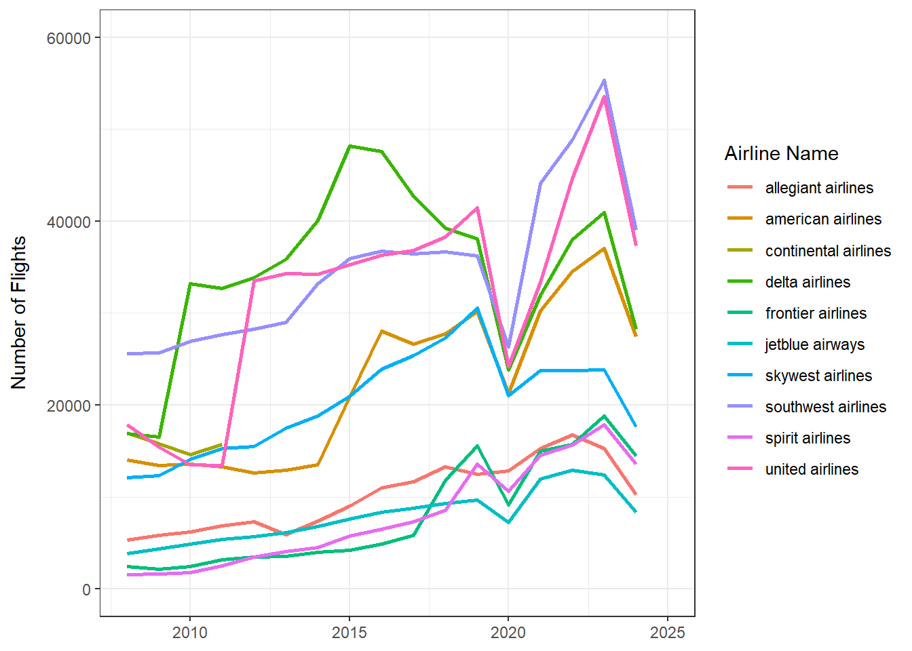
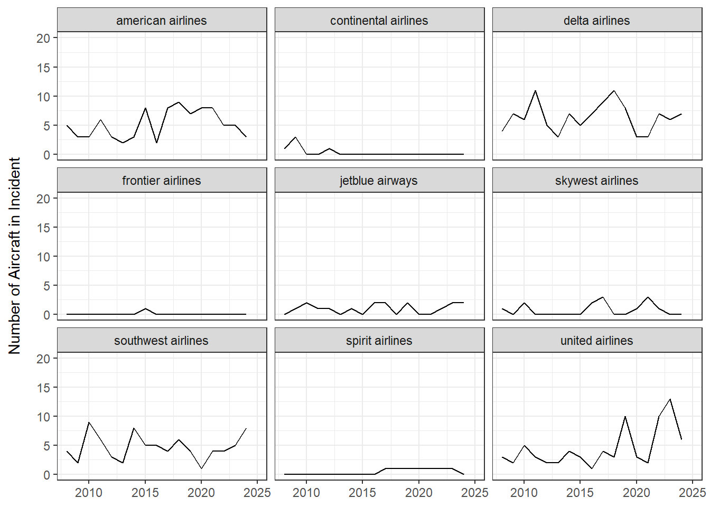

| airline_name | total_flights |
|---|---|
| allegiant airlines | 172583 |
| american airlines | 4417928 |
| continental airlines | 757332 |
| delta airlines | 6941792 |
| frontier airlines | 1582240 |
| jetblue airways | 1569476 |
| skywest airlines | 4053400 |
| southwest airlines | 6949932 |
| spirit airlines | 1547332 |
| united airlines | 6374796 |
Fear of Flying - Risk Evaluation
Fear of Flying
Many people are fearful of flying on commercial passenger airplanes for a multitude of reasons. More specifically, people may experience fear regarding whether their flight will have safe passage. Why are people fearful? After all, if you conduct a quick internet search, it appears that flying is considered the safest method of transportation.
Let’s take a deeper dive into what the data says.
What Does the Data Say?
To analyze how safe commercial passenger airplanes are, one approach is to get the total number of commercial passenger flights that have occurred over a given period of time. The region in which this analysis will occur is the United States, where both the departure and arrival locations are in the United States or where either the departure or arrival locations are in the United States.
Moreover, we can narrow down the fear of flying to be more specific. If you are located in the United States, you are likely to fly on the most popular airline carriers, such as:
JetBlue Airways
Southwest Airlines
American Airlines
Delta Airlines
Continental Airlines
Frontier Airlines
SkyWest Airlines
Allegiant Airlines
Spirit Airlines
United Airlines
So, this analysis will focus on the ten (10) carriers mentioned above.
Total Flights by Air Carrier
Let’s take a look at the total number of flights by air carrier. The date range selected was from January 2008 - August 2024. Flight totals are presented by month. The total number of flights for each airline was collected from the Bureau of Transportation Statistics (BTS). Below is a table that shows the total number of flights by airline within this time period:
To further illustrate the total number of flights by airline over time from January 2008 - August 2024, a graph is included below:

Total Incidents by Air Carrier
Now, let’s take a look at the number of “events” reported by the National Transportation Safety Board (NTSB). The NTSB, from an aviation perspective, is tasked with investigating civil cases of airplane accidents/incidents. The accidents/incidents vary in severity and are dependent on the level of damage sustained by the aircraft and the level of injury sustained by passengers. Here are the number of incidents investigated by the NTSB from the timeframe of January 2008 - August 2024:
| airline_name | num_incidents |
|---|---|
| american airlines | 88 |
| continental airlines | 5 |
| delta airlines | 109 |
| frontier airlines | 1 |
| jetblue airways | 17 |
| skywest airlines | 13 |
| southwest airlines | 80 |
| spirit airlines | 7 |
| united airlines | 76 |
Here are the number of incidents that have occurred over time, organized by airline:

As the data shows above, some airlines have experienced more incidents over time. Let’s normalize the number of incidents endured by each airline by the number of each airline’s flights. The last column in the table below - the “prcnt_incid” column - represents each airline’s rate of their respective craft experiencing an incident.
| airline_name | total_flights | total_incidents | prcnt_incid |
|---|---|---|---|
| allegiant airlines | 172583 | 0 | 0.0000000 |
| american airlines | 4417928 | 88 | 0.0019919 |
| continental airlines | 757332 | 4 | 0.0005282 |
| delta airlines | 6941792 | 109 | 0.0015702 |
| frontier airlines | 1582240 | 1 | 0.0000632 |
| jetblue airways | 1569476 | 17 | 0.0010832 |
| skywest airlines | 4053400 | 13 | 0.0003207 |
| southwest airlines | 6949932 | 80 | 0.0011511 |
| spirit airlines | 1547332 | 7 | 0.0004524 |
| united airlines | 6374796 | 76 | 0.0011922 |
Now, let’s look at how the “prcnt_incid” field is displayed in a graphical format:
Here are some summary statistics on each airline’s ratio of aircraft involved in an incident relative to the total flights flown:
| min | max | mean | median |
|---|---|---|---|
| 0 | 0.0019919 | 0.0008353 | 0.0008057 |
Conclusions
Some conclusions that come from the data above are the following:
- The airline with the highest ratio (0.002 %) of their aircraft involved in incidents relative to the number of flights flown (hereinafter referred to as the “ratio”) is American Airlines.
- The average ratio of all airlines part of this study is 0.00084 %.
- Even with this ratio, this means there is a 1 in 50,000 chance that a plane will experience an incident; again, an incident can have a variety of different meanings that can range from minor aircraft damage to crashes.
Notes on the Data
The NTSB data covers incidents that occur by US air carriers in both domestic and international locations. The BTS data includes both domestic and international locations as well; however, if the flight’s origin and destination are both located on international ground, then this is excluded. See the “T-100 Segment (US Carriers Only)” table located here: https://www.transtats.bts.gov/Tables.asp?QO_VQ=EED&QO_anzr=Nv4%FDPn44vr4%FDf6n6v56vp5%FD%FLS14z%FDHE%FDg4nssvp%FM-%FD%FDh.f.%FDPn44vr45&QO_fu146_anzr=Nv4%FDPn44vr45.
NTSB data can be obtained here: https://data.ntsb.gov/avdata